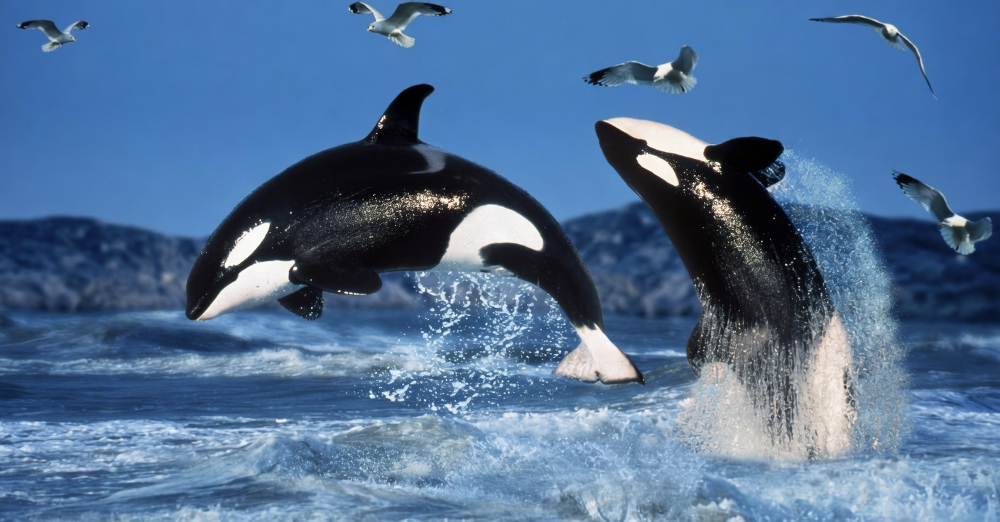

ORCA: EL DEPREDADOR APEX
Domina los océanos con inteligencia superior, fuerza brutal y estrategias de caza complejas. Las orcas, también conocidas como ballenas asesinas, son los mamíferos marinos más poderosos e inteligentes del planeta. No son ballenas, sino los miembros más grandes de la familia de los delfines (Delphinidae), capaces de abatir desde pequeños arenques hasta grandes ballenas azules.
